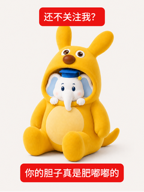
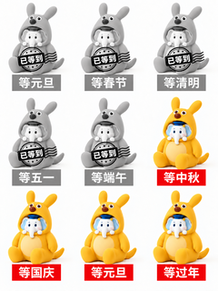
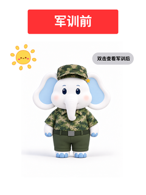
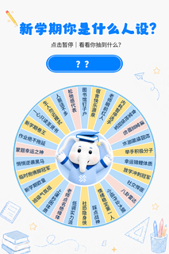
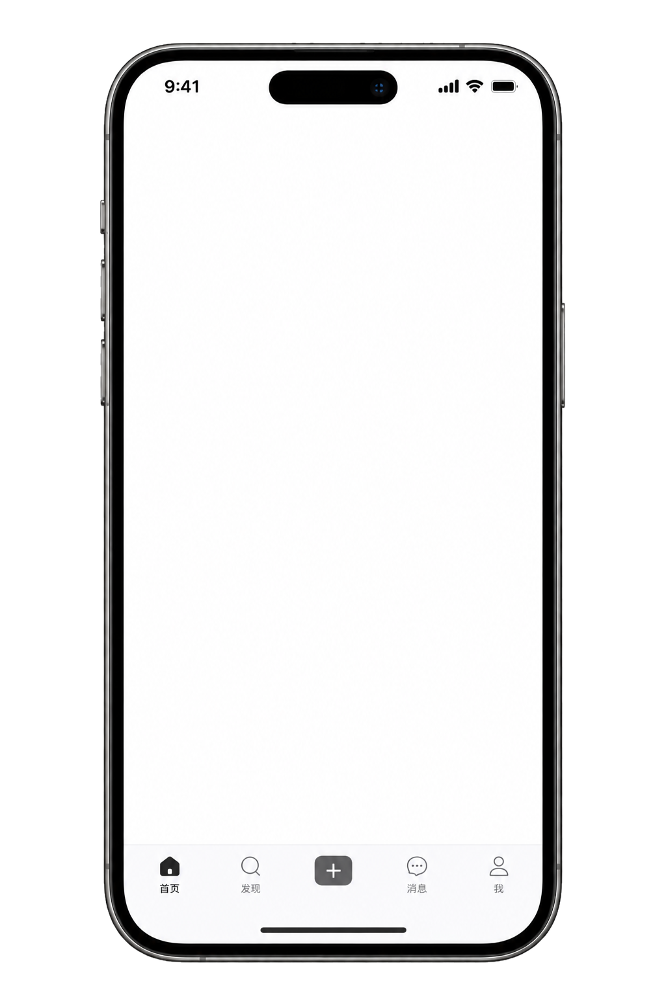
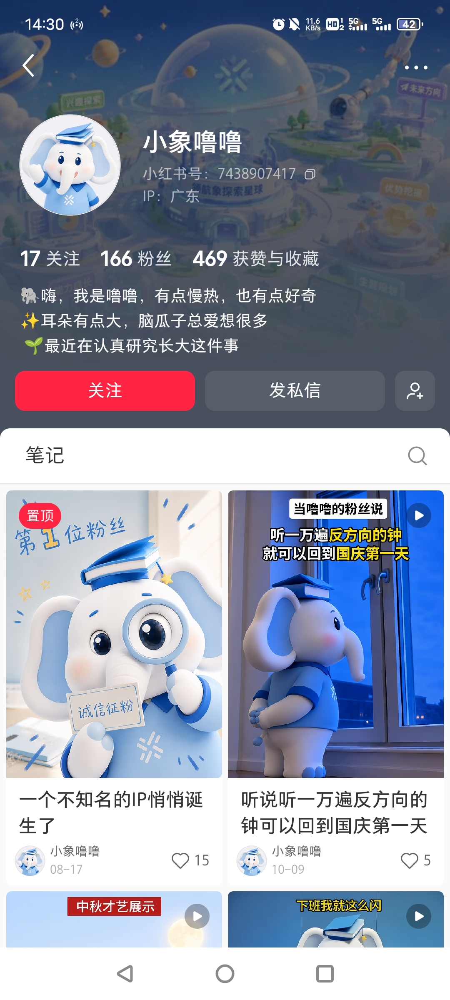

品牌需要一个能长期沉淀内容资产的小红书阵地，从 0 搭建人格化 IP 并验证内容有效性。
主导账号策划与运营落地：定义 IP 定位、规划内容生产链路，并打通与业务的衔接。完成账号冷启动，建立「规划—制作—复盘」运营链路。






| 发布 | 笔记标题 | 体裁 | 曝光 | 观看 | 赞 | 评 | 藏 | 涨粉 |
|---|---|---|---|---|---|---|---|---|
| 09-17 | 等中秋，等国庆，等下个假期 | 视频 | 2,646 | 828 | 103 | 9 | 67 | 42 |
| 09-14 | 军训前🆚军训后，噜噜还是你喜欢的样子吗 | 视频 | 1,600 | 1,315 | 142 | 4 | 11 | 12 |
| 08-17 | 一个不知名的IP悄悄诞生了 | 图文 | 5,390 | 383 | 15 | 56 | 2 | 11 |